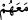

28. Ey îman edenler! Allah’tan korkun ve Peygamberine inanın ki O, size
rahmetinden iki kat versin ve size ışığında yürüyeceğiniz bir nûr lütfetsin; sizi
bağışlasın. Allah, çok bağışlayan, çok esirgeyendir.
29. Böylece Kitâb Ehli, Allah’ın lütfundan hiçbir şey elde edemeyeceklerini
bilsinler. Lütuf bütünüyle Allah’ın elindedir, onu dilediğine bahşeder. Allah, büyük
lütuf sâhibidir.
“Andolsun ki biz, peygamberlerimizi açık delillerle gönderdik” Yâni melekleri
peygamberlere, yahut peygamberleri ümmetlere gönderdik. İrşâd adlı eserde de bu
görüş tercih edilmiştir, daha zâhir olan görüş budur. “açık delillerle gönderdik” Açık
deliller -ki mûcizelerdir- ve açıklanmış şerîatlarla gönderdik. Şöyle bir soru
sorabilirsin: “Ölüleri diriltmek, elindeki asayı çeşitli sûretlere dönüştürmek, bembeyaz
parlayan el ve Ay’ın ikiye bölünmesi gibi mucizeleri, Allah Teâlâ, melek aracılığı
olmadan nübüvvet iddiâ eden peygamberleri için yaratmaktadır. Evet, Kur’an
mûcizesini melek indirmiştir, ama her peygambere mûcizeyi meleğin indirmiş olduğu
herhangi bir delille sâbit değildir.” Ben de cevâb olarak derim ki: Mûcizeyi melek
indirdi demenin mânâsı, bu mûcizenin peygamber eline verildiğini meleğin diliyle Allah
haber vermiştir, demektir.
“Ve insanların adâleti yerine getirmeleri için beraberlerinde kitâbı ve mîzânı
indirdik.” Yâni, hakkı açıklamak ve işin doğrusunu ayırd etmek için lüzumlu herşeyi
kapsayan kitap türünü indirdik. Yâni nazarî ve amelî kuvvetleri kemâle erdirmek için
böyle yaptık. Âyette geçen
zarfı, elçiler anlamındaki rusül kelimesinin
peygamberler şeklinde açıklanması yoluyla, kitab kelimesinden takdir edilmiş hâl
yapılır. Yâni kitâbın oluşu onlarla beraberdir. Peygamberler asla gökten inmezler, kitap
onlarla iner. Kitapla beraber inmek meleklerin işi, kitabı insanlara ulaştırmak
peygamberlerin işidir. Bu sebeple ilk vechin gelişine göre mânâ eğer “Peygamberleri
ümmetlere gönderdik” olursa, “Onlara kitap indirdik” denmesi de zâhir olur.
“Mîzân” Farsça tâbiriyle terâzidir. Aralarında alışverişlerinde hakları teslim edecek
ve herkese tam hakkını verecek şekilde adâletle muâmele etmeleri ve hiç kimsenin
kimseye bu konuda haksızlık etmemesi için terâzi indirdik. Terâzinin indirilmesi,
sebeplerinin indirilmesi ve onun hazırlanması için emir verilmesidir. Yoksa terâzi insan
eliyle yapılmış şeylerdendir, gökten indirilmiş değildir. Bir rivâyete göre Cebrâil (a.s.)
terâziyi bizzat kendi indirerek Hz. Nuh’a (a.s.) verdi ve “Kavmine emret, bununla
tartsınlar” dedi. Yâni “Birbirleriyle (muâmele) alışveriş zamanında bununla haklarını
düzenleyip dengelesinler.”
İmam Gazâlî demiştir ki: “Kitab’ın yanında geldiği bildirilen mîzânın buğday, arpa,
altın ve gümüş terâzisi olduğunu mu sanıyorsun? Yoksa onu büyük bir kantar olarak mı
hayal ediyorsun? Öyleyse bu gerçekten ne kadar uzak bir hesap ve ne kadar büyük bir
iftiradır! Allah’tan kork ve te’vil sırasında adâletten ayrılma! Kesin olarak bil ki, bu